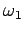
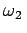

Inhalt Index DeskTop Bronstein

 Funktionentheorie Potenzreihenentwicklung analytischer Funktionen Isolierte singuläre Stellen und der Residuensatz
Funktionentheorie Potenzreihenentwicklung analytischer Funktionen Isolierte singuläre Stellen und der Residuensatz


Elliptische Funktionen sind doppeltperiodische Funktionen, deren einzige Singularitäten Pole sind, d.h., es sind meromorphe Funktionen mit zwei unabhängigen Perioden. Sind die beiden Perioden  und , die in einem nichtreellen Verhältnis stehen, dann gilt
 |
(14.53) |
Der Wertevorrat von f(z) liegt in einem Periodenparallelogramm mit den Punkten